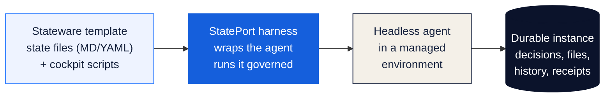

01
Your state stays yours
Each application is a template of durable state files and scripts you can read, edit, and carry with you — not a session locked inside a chat.
 StatePort
StatePort
A harness for coding agents
StatePort wraps coding agents like Codex and runs them headlessly in environments you control — your machine, or an isolated container. Each application is a Stateware template: durable state files plus the cockpit scripts the agent runs. The agent is a replaceable processor; the work stays yours.
Local preview · public release in preparation
Wrap the agent · own the state · keep the work
The idea
A coding agent is good at doing the work, not at being the work. StatePort is the harness around it: it runs the agent headlessly, governs its risky steps, and writes the result into durable state you own.
Chat and agent sessions help move things forward. They do not become the only place your work exists.
Inside StatePort
A short, captioned tour of picking up work, asking for help, and seeing what is ready.
Local preview, recorded 23 July 2026. Availability lives in the release ledger.

Return to a named project, not a blank chat.

Use conversation without losing the rest of the work.

See what is trusted, what is being checked, and what is not ready.

The same work stays understandable on a small screen.
01
Each application is a template of durable state files and scripts you can read, edit, and carry with you — not a session locked inside a chat.
02
Before an important change, you can see what will happen. Afterwards, you can see what changed and what was checked.
03
The harness orchestrates Codex today; Pi, OpenCode, and direct API are declared hosts with their own capabilities. Swap the agent without losing the work.
A practical route
01 / WRAP
StatePort runs agents like Codex headlessly in an environment you control — your machine, or an isolated container.
02 / TEMPLATE
Each application is a Stateware template: durable state files plus the cockpit scripts the agent is allowed to run.
03 / RUN
The harness plans, asks approval on risky steps, runs the agent, and records what changed. The agent never owns the truth.
04 / KEEP
Decisions, files, and history stay in your instance. Swap the agent or model and the work is still there.

A planned next step
Agent Kits are a planned way to share a focused tool with clear setup, clear limits, and a place for the work to belong.
A clear starting point.
What it needs, stated plainly.
People stay in charge.
The work stays with you.
Go deeper
Start with the simple idea, then explore the technical details when you are ready.
Release ledger
Stay oriented
The release ledger keeps the exact availability details in one place.